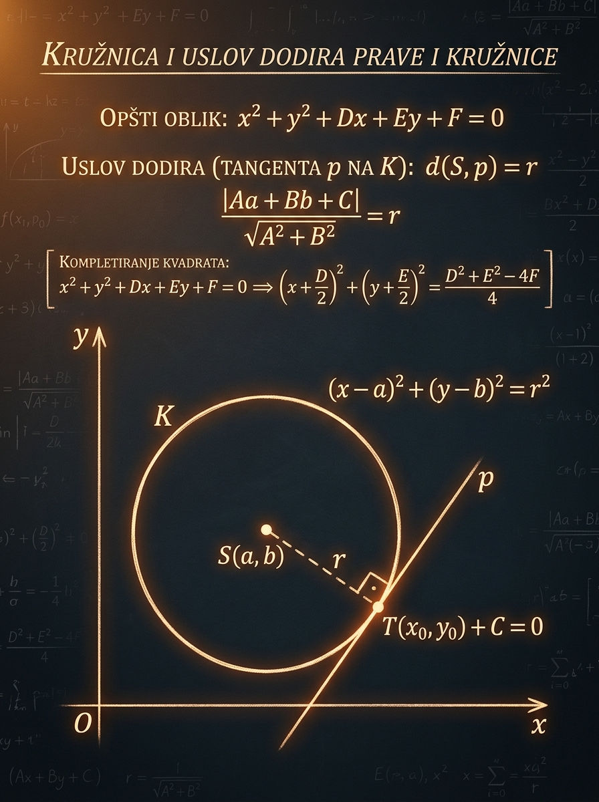

Šta ćeš naučiti
Kako se prelazi između centralne i opšte jednačine i kako se iz uslova gradi kružnica.
Kada vidiš kružnicu na prijemnom, skoro nikada nije dovoljno samo prepoznati formulu. Moraš da znaš da pročitaš centar i poluprečnik, da iz geometrijskih uslova sastaviš jednačinu i da shvatiš zašto je tangenta poseban položaj u kome je rastojanje centra od prave tačno jednako poluprečniku.
Kako se prelazi između centralne i opšte jednačine i kako se iz uslova gradi kružnica.
Uslov dodira nije samo “jedno rešenje”, već i formula rastojanja sa apsolutnom vrednošću.
Tangente paralelne datoj pravoj, kružnice tangentne na ose i zadaci sa parametrom.

Ova tema je važna zato što u istoj jednojčini držiš i geometrijsku sliku i algebrajski račun. Na prijemnom se vrlo često ne traži samo da prepoznaš kružnicu, već da iz nekoliko uslova sastaviš njenu jednačinu ili da nađeš tangentu. Tu pobeđuje učenik koji ume da misli u dva jezika: u koordinatama i u formulama.
Kružnica je najjednostavnija kriva drugog reda. Ako nju razumeš do kraja, mnogo lakše prelaziš na elipsu, hiperbolu i parabolu, jer se i tamo stalno kombinuju geometrijski uslovi, analitički zapis i uslovi dodira.
Prijemni retko nagrađuje puko pamćenje. On proverava da li umeš da prepoznaš šta je nepoznato i koja formula baš taj uslov prevodi u jednačinu. Zato je ključna navika da svaku rečenicu iz teksta zadatka odmah pretvoriš u jedan matematički uslov.
Prvi korak nije odmah širenje zagrada, nego izbor nepoznatih. Najčešće uzimaš centar \(C(a,b)\) i poluprečnik \(r\), pa tek onda svaku datu informaciju prevodiš u jednačinu za \(a\), \(b\) i \(r\).
Kružnica je skup svih tačaka u ravni koje su od jednog fiksnog centra udaljene za isti iznos \(r\). Ta definicija već sama vodi do centralne jednačine. Opšti oblik dobijaš kada razviješ kvadrate i središ članove.
Ako je centar kružnice \(C(a,b)\), a poluprečnik \(r>0\), onda svaka tačka \(M(x,y)\) na kružnici zadovoljava uslov da je rastojanje \(CM\) jednako \(r\).
Ovo je najbolji oblik kada treba brzo da pročitaš centar i poluprečnik. Iz jednačine odmah vidiš:
Kada razviješ kvadrate iz centralnog oblika, dobijaš opšti oblik kružnice:
Za kružnicu je važno da su koeficijenti uz \(x^2\) i \(y^2\) jednaki, a da nema člana \(xy\). Prelaz nazad u centralni oblik radi se kompletiranjem kvadrata:
Odavde odmah sledi:
Iz \( (x-3)^2+(y+2)^2=16 \) čitaš centar \(C(3,-2)\) i poluprečnik \(r=4\).
Iz \(x^2+y^2-6x+4y-12=0\) dobijaš \( (x-3)^2+(y+2)^2=25 \), pa je \(C(3,-2)\), \(r=5\).
Ako posle sređivanja dobiješ \(r^2<0\), onda ne postoji realna kružnica. Ako je \(r^2=0\), dobijaš degenerisan slučaj: jednu tačku.
U prvom izrazu su koeficijenti uz \(x^2\) i \(y^2\) jednaki i nema člana \(xy\), pa posle sređivanja dobijaš kružnicu. U drugom izrazu koeficijenti uz \(x^2\) i \(y^2\) nisu jednaki, pa ne dobijaš kružnicu nego drugu krivu drugog reda.
Ako je data kružnica sa centrom \(C(a,b)\) i poluprečnikom \(r\), a prava \(p: Ax+By+C=0\), onda sve zavisi od rastojanja centra od te prave. To rastojanje određuje da li prava seče kružnicu, dodiruje je ili je potpuno spoljašnja.
Iz centra kružnice povuci normalu na pravu. Njeno podnožje označi sa \(H\). Tada duž \(CH\) predstavlja najmanje rastojanje centra od prave.
Sada dobijaš tri položaja:
Ako je prava data u obliku \(y=mx+n\), često je zgodno zameniti taj izraz u jednačinu kružnice. Dobija se kvadratna jednačina po \(x\) ili po \(y\). Tangenta znači da sistem ima tačno jedno rešenje.
Ovaj pristup je posebno koristan kada tražiš pravu sa nepoznatim nagibom \(m\), na primer tangente kroz zadatu spoljašnju tačku. Tada diskriminanta prirodno daje jednačinu za parametar.
Na prijemnom važi praktično pravilo:
Kada je \(d(C,p)<r\), prava prolazi kroz unutrašnjost kružnice i dobijaš dve presečne tačke.
Kada je \(d(C,p)=r\), prava ima tačno jednu zajedničku tačku sa kružnicom i normalna je na odgovarajući poluprečnik.
Kada je \(d(C,p)>r\), prava je predaleko od centra i kružnica je ne dodiruje.
Zato što izraz \(Aa+Bb+C\) može biti i pozitivan i negativan, u zavisnosti sa koje strane prave leži centar. Rastojanje nikada ne može biti negativno, pa zato mora da stoji apsolutna vrednost.
Veliki broj prijemnih zadataka svodi se na isto: neka su nepoznati centar \(C(a,b)\) i poluprečnik \(r\), pa svaku rečenicu iz zadatka pretvoriš u jedan uslov. Kružnica nastaje tek kada imaš dovoljno jednačina da odrediš \(a\), \(b\) i \(r\).
Pošto je \(x\)-osa prava \(y=0\), važi \( |b|=r \). Ako je centar u prvom ili četvrtom kvadrantu, znak se određuje iz položaja centra.
Pošto je \(y\)-osa prava \(x=0\), dobijaš \( |a|=r \). Ovo je posebno korisno kada kružnica dodiruje obe ose.
Ako kružnica prolazi kroz \(P(x_0,y_0)\), onda koordinate te tačke zadovoljavaju jednačinu: \( (x_0-a)^2+(y_0-b)^2=r^2 \).
Za pravu \(Ax+By+C=0\) uslov je \( \frac{|Aa+Bb+C|}{\sqrt{A^2+B^2}}=r \). Ovaj uslov spaja geometriju i algebru u jednom potezu.
Ako je centar u prvom kvadrantu, iz \( |a|=r \) i \( |b|=r \) sledi \( a=r \), \( b=r \). Zato je centar oblika \(C(r,r)\).
Konstrukcioni zadaci često daju dve kružnice. To se dešava kada ista tačka ili ista prava može da bude tangencijalno povezana sa dva različita poluprečnika.
Zato što su rastojanja centra od obe ose jednaka poluprečniku. U prvom kvadrantu su koordinate centra pozitivne, pa iz \( |a|=r \) i \( |b|=r \) sledi \(a=r\) i \(b=r\).
Menjaj centar, poluprečnik i koeficijente prave \(Ax+By+C=0\). Vizuelno ćeš videti da li je prava sečica, tangenta ili spoljašnja prava. Posebno obrati pažnju na podnožje normale: kada je status “Tangenta”, to podnožje postaje tačka dodira.
Uslov dodira se ovde vidi geometrijski: prava je tangenta tačno onda kada je podnožje normale iz centra na pravu ujedno jedina zajednička tačka.
Laboratorija prati kriterijum \( \displaystyle d(C,p)=\frac{|Aa+Bb+C|}{\sqrt{A^2+B^2}} \) i odmah poredi dobijeno rastojanje sa poluprečnikom \(r\).
U primerima ispod cilj nije samo konačan rezultat, već način razmišljanja. Obrati pažnju koje nepoznate biramo i zašto je neka metoda kraća od druge.
Odredi centar i poluprečnik kružnice \(x^2+y^2-6x+2y-6=0\).
Članove sa \(x\) i \(y\) razdvoji i prebaci slobodan član na drugu stranu:
Za \(x^2-6x\) dodaješ \(9\), a za \(y^2+2y\) dodaješ \(1\). To moraš dodati na obe strane jednačine:
Sada je jednačina u centralnom obliku, pa odmah čitaš:
Zaključak: opšti oblik je koristan za zapis, ali centralni oblik je ono što želiš da vidiš u glavi.
Nađi jednačine tangenti kružnice \( (x-2)^2+(y+1)^2=25 \) koje su paralelne pravoj \(3x-4y+1=0\).
Paralelne prave imaju iste koeficijente uz \(x\) i \(y\), pa tražene tangente imaju oblik:
Iz jednačine kružnice dobijaš:
Za tangentu mora da važi rastojanje centra od prave jednako poluprečniku:
Apsolutna vrednost daje dva slučaja:
Zaključak: dve tangente su normalna pojava. Ako zaboraviš apsolutnu vrednost, izgubićeš jednu od njih.
Nađi jednačinu kružnice čiji je centar u prvom kvadrantu, koja dodiruje obe ose i prolazi kroz tačku \(P(4,1)\).
Pošto je centar u prvom kvadrantu i kružnica dodiruje obe ose, važi:
Zato je jednačina kružnice:
Koordinate tačke \(P(4,1)\) moraju zadovoljiti jednačinu:
Zaključak: jedan isti uslov može dati dve kružnice. To nije greška, nego prirodna geometrijska situacija.
Nađi tangente na kružnicu \(x^2+y^2=5\) koje prolaze kroz tačku \(A(0,3)\).
Svaka prava kroz \(A(0,3)\) može da se zapiše kao:
Tangenta znači da kvadratna jednačina ima jedno rešenje, pa je diskriminanta jednaka nuli:
Zaključak: kada je prava zadana preko nagiba, diskriminanta je često najprirodniji put do rešenja.
Sledeće formule su jezgro cele lekcije. Ne uči ih kao odvojene činjenice, nego uz situaciju u kojoj ih koristiš.
Najbrže čitaš centar i poluprečnik. Ovo je polazni oblik za većinu konstrukcionih zadataka.
Posle kompletiranja kvadrata dobijaš centar \( \left(-\frac{D}{2},-\frac{E}{2}\right) \) i poluprečnik \( \sqrt{\frac{D^2+E^2}{4}-F} \).
Osnovni uslov da prava \(Ax+By+C=0\) bude tangenta na kružnicu sa centrom \(C(a,b)\).
Ako su tangente paralelne zadatoj pravoj, koeficijenti \(A\) i \(B\) ostaju isti, a menja se samo \(\lambda\).
Brza formula kada znaš tačku dodira \(T(x_1,y_1)\) na kružnici sa centrom u koordinatnom početku.
Kada je prava data preko nepoznatog nagiba ili parametra, zamena u jednačinu kružnice i uslov \(\Delta=0\) često daju najkraći račun.
Ove greške nisu slučajne. Nastaju baš na mestima gde učenik krene na pamćenje umesto na razumevanje.
U formuli za rastojanje mnogi pišu \(Aa+Bb+C\) umesto \(|Aa+Bb+C|\). Posledica je pogrešan znak i izgubljeno rešenje.
Iz \( (x-4)^2+(y+3)^2=9 \) centar nije \( (4,3) \), nego \( (4,-3) \). Znak u zagradi se čita obrnuto.
Kod tangenti paralelnih zadatoj pravoj učenici menjaju i \(A\) i \(B\). To menja pravac prave. Za paralelnost menjaš samo slobodan član.
Konstrukcioni zadaci vrlo često daju dve kružnice. Ako ne proveriš oba znaka ili oba korena, lako ostaneš bez potpunog odgovora.
Dodavanje \(9\) uz \(x^2-6x\) i \(1\) uz \(y^2+2y\) mora da bude uravnoteženo na drugoj strani. U suprotnom dobijaš pogrešan poluprečnik.
Uslov dodira porediš sa \(r\), a ne sa \(r^2\). Tek u centralnoj jednačini na desnoj strani stoji \(r^2\).
Na prijemnom se kružnica najčešće ne pojavljuje kao izolovana tema, već zajedno sa pravom, parametrom ili uslovom konstrukcije. Zato je korisno da već unapred znaš obrazac zadatka koji gledaš.
Pokušaj svaku vežbu da rešiš bez gledanja rešenja. Ako zapneš, vrati se i proveri da li si pravilno izabrao nepoznate i preveo uslove.
Odredi centar i poluprečnik kružnice \(x^2+y^2+8x-6y-11=0\).
Grupiši članove i kompletiraj kvadrate:
Zato je centar \(C(-4,3)\), a poluprečnik \(r=6\).
Ispitaj da li je prava \(3x-4y-6=0\) tangenta, sečica ili spoljašnja prava kružnice \( (x-1)^2+(y+2)^2=16 \).
Centar je \(C(1,-2)\), poluprečnik \(r=4\). Računaj rastojanje:
Pošto je \(1<4\), prava je sečica.
Nađi tangente kružnice \( (x+1)^2+(y-3)^2=25 \) paralelne pravoj \(x+2y-5=0\).
Tražene prave imaju oblik \(x+2y+\lambda=0\). Centar kružnice je \(C(-1,3)\), a \(r=5\).
Zato su tangente:
Nađi jednačine kružnica čiji je centar na \(x\)-osi, koje dodiruju pravu \(y=4\) i prolaze kroz tačku \(P(1,1)\).
Neka je centar \(C(a,0)\). Dodir sa pravom \(y=4\) znači da je poluprečnik \(r=4\). Pošto kružnica prolazi kroz \(P(1,1)\), važi:
Dobijaš dve kružnice:
Nađi tangente na kružnicu \(x^2+y^2=9\) koje prolaze kroz tačku \(A(0,5)\).
Prava kroz \(A(0,5)\) ima oblik \(y=kx+5\). Uvrsti u jednačinu kružnice:
Za tangentu mora biti \(\Delta=0\):
Tangente su:
Kružnica nije skup odvojenih formula. Ona je jedan model sa tri ključne ideje:
Ovu lekciju ne završavaš pamćenjem mnogo formula, nego sigurnošću u nekoliko temeljnih koraka.
Iz \( (x-a)^2+(y-b)^2=r^2 \) odmah čitaš centar \(C(a,b)\) i poluprečnik \(r\).
Opšta jednačina dobija smisao tek posle kompletiranja kvadrata. Bez toga ne vidiš geometriju.
Za pravu \(Ax+By+C=0\) tangenta nastaje kada je \( \frac{|Aa+Bb+C|}{\sqrt{A^2+B^2}}=r \).
Dodir sa osom, prolazak kroz tačku i položaj centra zajedno grade sistem koji određuje kružnicu.